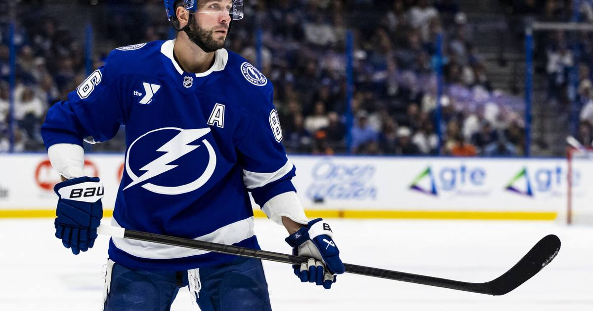

Nikita Kucherov wins it in OT a week after his trade request went public
A week after his trade request became public, Nikita Kucherov scored a power-play goal 3:23 into overtime to lift Tampa Bay past Minnesota 4-3 — and made it clear, again, that he intends to keep playing for the Lightning.

Disclosure: this post contains affiliate links. I earn a commission on qualifying purchases.
What happened
The Tampa Bay Lightning beat the Minnesota Wild 4-3 in overtime on Saturday night in St. Paul, and the winner came from the one player everyone in the building was watching.
Nikita Kucherov scored a power-play goal 3:23 into overtime to win it for the Lightning, a week after his trade request became public. The Lightning improved to 11-3-2. The Wild fell to 12-3-4. But the score was almost beside the point — this was a night about Kucherov, and he answered the only way he knows how.
The trade request, in his words
The story broke on October 30, when Sportsnet's Elliotte Friedman reported that Kucherov had requested a trade. On November 2, Kucherov spoke publicly about it for the first time, and he was blunt about what it was — and what it was not.
"It was never about the money," Kucherov said. "Over the last four months, we only have had two conversations and Julien, in the end, made it clear that I'm free to walk on July 1."
The complaint, in his telling, was about "poor communication and respect" from the organization — not the contract, not the city, not the team. General manager Julien BriseBois responded that the Lightning "unequivocally have no intention of trading Nikita."
The numbers behind the standoff are enormous. Kucherov, 33, is the reigning Hart Trophy winner as NHL MVP, in the final year of an eight-year, $76 million deal ($9.5 million AAV). He reportedly sought around $20 million AAV over six years, per Chris Johnston, and submitted a 10-team trade list. He has also made it clear he intends to keep playing — and in his first game after the request went public, on October 31 at Nashville, he recorded three assists.
What it means
This is the part of the story that matters on the ice: Kucherov is still Kucherov. He is still producing, still the player the Lightning build their power play around, and still the one who ends games in overtime. The trade request is real, the frustration is real, and the contract standoff is real — but so is the production.
The Lightning have no intention of trading him. He has no intention of sitting out. And in the meantime, he keeps scoring overtime winners. That is the whole saga in one sentence, and it is not going away anytime soon.
The box score
Final score: Lightning 4, Wild 3 (OT)
Kucherov: OT power-play goal, 3:23 into overtime
Lightning: 11-3-2
Wild: 12-3-4
Trade request: Reported October 30 by Sportsnet's Elliotte Friedman
Contract: Final year of 8-year, $76M deal ($9.5M AAV)
Sources
• NHL roundup: Seeking trade, Lightning's Nikita Kucherov wins it in OT (Reuters)
Gear up: Fanatics